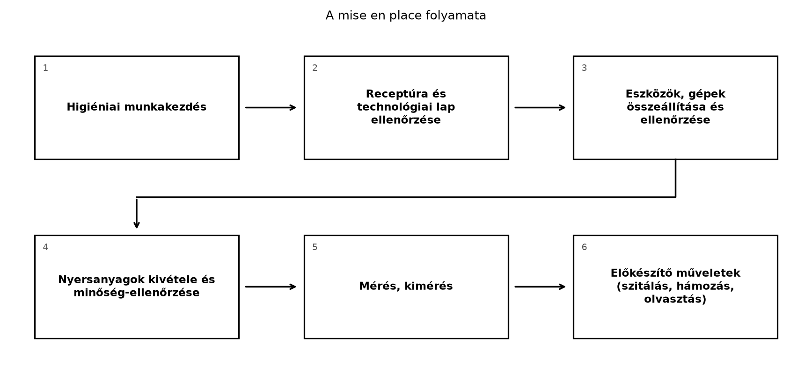

A cukrászüzemben ritkán elég „csak összekeverni” az anyagokat. Az előkészítés nélküli munka úgy végződik, hogy a piskóta összeesik, a vajkrém csomós lesz, a csokoládé megdermed, mielőtt bevonhatnánk. Ezért minden termékkészítés előtt el kell végeznünk a mise en place-t, vagyis az anyagok, eszközök, gépek és higiéniai feltételek tudatos előkészítését. Ez az alfejezet ezt a tanulási célt építi fel: a termék előkészítő műveleteit a helyes sorrendben, élelmiszerbiztonsági szempontból helyesen hajtjuk végre.

Az ábra nélkül is olvasható lépéssor: először a higiéniát és a receptúrát (technológiai lapot) ellenőrizzük, majd összeállítjuk és ellenőrizzük az eszközöket és gépeket (tiszta mérleg, szita, edények), ezután a nyersanyagokat kivesszük, kimérjük és előkészítjük. A sorrend nem merev, de a nyersanyagok és a tiszta eszközök soha ne keveredjenek szennyezett felülettel vagy vegyszerrel.
Definíció. A mise en place (francia kifejezés, kb. „helyretétel”) a cukrászüzemben az anyagok, eszközök, gépek és higiéniai feltételek összegyűjtése, ellenőrzése és előkészítése a tényleges termékkészítés megkezdése előtt. A cél az, hogy a technológiai művelet elindításakor már minden adott legyen: kimért mennyiség, megfelelő hőmérséklet, tiszta eszköz, ismert allergéntartalom.
Definíció. Előkészítő művelet alatt a nyersanyagoknak a tulajdonképpeni feldolgozó művelet (keverés, habverés, dagasztás, főzés, sütés) előtti tisztítását, méretre alakítását, hőmérséklet-előkészítését, oldását, áztatását vagy egyéb állapot-javítását értjük.
Szabály. A mise en place-t mindig a technológiai lap vagy a recept előírása alapján végezzük. Az allergén anyagokat külön edényben, feliratozva mérjük ki. A nyers és a hőkezelésre váró, valamint a nyers fogyasztásra szánt anyagokat elkülönítjük. A hűtőből csak annyi nyersanyagot veszünk ki, amennyit a technológiai sorrend indokol.
Továbbvitt eredmény. A mise en place rendjét a későbbi alapműveleteknél is kötelezően alkalmazzuk: minden termékkészítést ezzel az ellenőrzőlistával kezdünk a Keverés, habverés, dagasztás, resztelés, forrázás és főzés alfejezetben.
Az alábbi műveletek a leggyakoribb cukrászati előkészítők. Mindegyiknél figyeljünk a miértre: a művelet nem öncélú, hanem a későbbi folyamatot készíti elő.
A lisztet, a porcukrot, a kakaóport, a mandulalisztet és más por alakú anyagokat szitán átengedjük. A cél háromszoros:
Gyakorlat. A szita alá mindig tiszta, száraz edényt tegyünk. A lisztet először kisebb adagban, majd egyenletesen, rázva vagy fakanállal ütögetve szitáljuk át. A fennmaradt csomókat ne gyúrjuk át, hanem szükség esetén morzsoljuk szét és szitáljuk újra.
A friss gyümölcsöt, zöldséget, citrushéjat és friss fűszernövényt folyó ivóvíz alatt mossuk. A héjon található szennyeződés, por, növényvédőszer-maradvány és mikroba mennyisége így csökkenthető.
Higiénia. A mosott alapanyagot tiszta, lyukas edényben csepegtessük le, és soha ne tegyük vissza a nyers, mosatlan tétel közé. A gyökérzöldséget (pl. sárgarépa a sós süteményhez) dörzsölve kell tisztítani. A bogyós gyümölcsöt csak közvetlenül felhasználás előtt mossuk, mert nedvesen gyorsabban romlik.
A héj eltávolítása és a magház, magok kivétele méretre alakítja az alapanyagot, és eltávolítja a nem ehető vagy rágós részeket. A gyümölcsöknél ez egyben veszteséget is jelent, amit a kalkulációnál figyelembe kell venni.
Hiba. A hámozás során sok értékes hús is levágásra kerülhet, ezért a kést élesen, a mozdulatot a héjjal párhuzamosan vezessük. A magozóval eltávolított magok környékét ellenőrizzük, mert ott penész vagy kártevő bújhat meg.
Olajos magvakat (dió, mandula, mogyoró), mákot, kekszet, csokoládét, sós töltelékek húsát gyakran darálva használunk. A darálás növeli a felületet, egyenletesebbé teszi a tésztába vagy krémbe való bekeverést.
Figyelem. Az olajos magvak a gépi darálás közben felmelegedhetnek, és az olaj kiválhat. Ezért nagyobb mennyiségben hűtött anyaggal, kíméletesen daráljunk. A gépet csak oktatás után, felügyelet mellett használjuk, és tisztítás előtt áramtalanítani kell.
A diót, mandulát, mogyorót, darát vagy kókuszreszeléket száraz serpenyőben, sütőben vagy pirítóban enyhén megpirítjuk. A hő hatására aromaanyagok keletkeznek (Maillard-reakció és karamellizáció), csökken a nedvességtartalom, az íz intenzívebb lesz.
Gyakorlat. A pirítás legyen folyamatos, kevergetős, közepes hőmérsékletű. A magvak akkor készek, amikor illatuk édeskés-diós, színük enyhén aranybarna. A túlpirított mag keserű, és a tésztában is érvényesül a hibája.
Vajat, zselatint, csokoládét, glükózt, fondánt vagy mézet gyakran melegítéssel folyékony vagy képlékeny állapotba hozunk. Az olvasztás mindig kíméletes legyen, mert a hőérzékeny anyagok kicsapódhatnak vagy megéghetnek.
Figyelem. A csokoládét és a vajat ne tegyük közvetlenül nagy lángra; vízgőz felett vagy alacsony hőfokon, folyamatosan keverjük. A hőmérsékletet hőmérővel ellenőrizzük. Az étcsokoládé olvasztási hőmérséklete tanulási példaként 45–50 °C, a tejcsokoládéé 40–45 °C, a fehér csokoládéé legfeljebb kb. 40 °C (ellenőrizendő: gyártói adatlap).
A zselatint hideg vízben, az aszalt gyümölcsöt alkoholban, teában vagy gyümölcslében, a diót, mákot gyakran tejben vagy szirupban áztatjuk. A cél a rehidrálás, azaz a vízfelvétel, a térfogat- és állagnövekedés, valamint az ízesítő folyadék bejuttatása.
Szabály. Az áztatott anyagot a felhasználásig hűtve tároljuk, ha az élelmiszerbiztonsági kockázatot jelent. A zselatinlapot hideg vízben puhítsuk, majd kinyomkodva adagoljuk a meleg közeghez.
Kritikus pont. A tojás héja szalmonellát hordozhat. Ezért a tojás héját közvetlenül a feltörés előtt a házi HACCP-terv szerinti tojásfertőtlenítő oldattal fertőtlenítjük, öblítjük, majd tiszta, egyszer használatos törlővel megszárítjuk (ellenőrizendő: NÉBIH-útmutató, a fertőtlenítőszer adatlapja). A puszta vizes mosás nem fertőtlenít, a megmosott tojást pedig nem tesszük vissza tárolásra. A tojást egyesével, külön tálba kell feltörni, nehogy egy romlott szem az egész tételt beszennyezze. A törés után a kezet mindig mossuk meg, és a munkalapot fertőtlenítsük.
A tojássárgáját és a tojásfehérjét szétválasztáskor óvatosan kezeljük. A sárgája zsírtartalma akadályozza a fehérje habosodását, ezért a fehérjéhez ne kerüljön sárgája-rész.
A képsor lépései: (1) a tojást lapos, tiszta felületen törjük fel, nem a tál peremén; (2) egyenként kis edénybe engedjük, és ellenőrizzük a frissességét és a héjdarabot; (3) szétválasztóval vagy kézzel választjuk szét úgy, hogy a sárgája ne érjen a héj éléhez; (4) a fehérje zsírmentes tálba, a sárgája külön kerül; (5) a héjjal való érintkezés után kezet mosunk.
Tilos. Repedt, törött héjú vagy kellemetlen szagú tojást nem használunk fel. A nyers tojástömeg hőkezelés nélkül nem maradhat szobahőmérsékleten 30 percnél tovább (ellenőrizendő: hatályos NÉBIH-útmutató). Nyers tojást tartalmazó krémet csak pasztőrözött tojástermékből vagy hőkezelt változatban szabad készíteni.
A vajkrémekhez, kevert tésztákhoz és omlós tésztákhoz a vajnak szobahőmérsékletűnek, azaz krémesen lágy állapotúnak kell lennie, de nem olvadhat meg. A javasolt tartomány tanulási példaként 18–22 °C (receptúra szerint eltérhet). A hideg vajat felkockázzuk, hogy gyorsabban átvegye a környezet hőmérsékletét, vagy rövid időre langyos helyre tesszük.
Hiba. Ha a vajat mikrohullámú sütőben teljesen felolvasztjuk, a krém szétesik, mert a zsír és a víz fázisok szétválnak. Ezért a vajat inkább időben vegyük ki a hűtőből, és mérjük meg a hőmérsékletét.
A csokoládét temperálás előtt olvasztani kell. Ez vízgőz felett, szakaszosan, keverve történik. A víz ne cseppenjen a csokoládéba, mert a massza megcsomósodik. A hőmérsékletet étcsokoládénál 50 °C, tejcsokoládénál 45 °C, fehér csokoládénál kb. 40 °C fölé ne emeljük (tanulási példa; ellenőrizendő: gyártói adatlap). A temperálást később tanuljuk.
A helyes vízfürdőben a lábasban kevés, gyöngyöző (nem forró) víz van (1), a tál alja nem ér a vízhez (2), a tál pereme lezárja a lábast (3), a csokoládéban hőmérő (4) van, és száraz spatulával (5) keverünk. Hibás, ha a víz erősen forr (6), a tál a vízbe lóg (7), a tál mellett gőz csap fel (8), és a csokoládéba jutó vízcsepptől a massza besűrűsödik (9).
A receptek megkülönböztetik a szobahőmérsékletű, hűtött és meleg anyagokat. A hőmérséklet-előkészítés azt jelenti, hogy az anyagokat a technológia által előírt állapotba hozzuk:
Gyakorlat. A hűtőből kivett anyagokat érkezéskor írjuk fel a kivétel idejét, és a fel nem használt részt mielőbb tegyük vissza. A hűtőlánc megszakítása a romlás kockázatát növeli.
Az előkészítő műveletek során is kell számolnunk, elsősorban a tisztítási veszteséggel és a kimérendő tömeggel.
1. példa – hámozott alma előkészítése
Adott: 800 g hámozott, magozott almára van szükség. A hámozási és
magozási veszteség tanulási példaként 20%.
Keresett: hány gramm almát kell megvásárolni és előkészíteni?
A veszteség képlete:
Behelyettesítve:
Ellenőrzés: 1000 g alma 20%-os veszteséggel 800 g nettót ad. Tehát 1 kg almát kell előkészíteni. ∎
2. példa – tojásfehérje kimérése
Adott: a recept 240 g tojásfehérjét ír elő. Egy M osztályú tojás
fehérjéje tanulási értékként átlagosan 34 g (a 17.4. alfejezet
tojásadatával egyezően; ellenőrizendő: tömegosztály és forrás).
Keresett: hány darab tojásfehérje szükséges?
Számítás:
Ha a tényleges szétválasztás után a lemért fehérje csak 220 g, akkor a hiányzó 20 g-ot pótolni kell, vagy a receptet át kell számítani. ∎
Egy 24 cm-es piskótatorta alapanyagainak előkészítése: anyagok kimérése, tojás szétválasztása, vaj kilágyítása, liszt és porcukor átszitálása, csokoládé olvasztása. A cél nem a teljes piskóta és krém elkészítése, hanem a mise en place begyakorlása.
| Nyersanyag | Mennyiség (g) | Megjegyzés |
|---|---|---|
| Tojás | 300 (6 db közepes) | szétválasztva: sárgája, fehérje |
| Liszt (finom) | 120 | átszitáláshoz |
| Cukor (kristály) | 120 | mérve |
| Vaj | 200 | szobahőmérsékletűre lágyítva |
| Porcukor | 150 | átszitálva |
| Étcsokoládé | 100 | vízgőz felett olvasztva |
| Összesen | 990 | – |
Ezek az arányok tanulási receptúra; a pontos receptet a felhasznált technológiai lap határozza meg.
A vágóeszközöket, a meleg vízfürdőt és az esetleges gépi habverőt csak oktatás után, felügyelet mellett használjuk. A kést mindig élezett, de biztonságos állapotban, a vágás irányától távol eső kézzel tartsuk. A forró vízgőz fölé hajolni tilos; a csokoládét keverő kanalat ne nyaljuk meg.
Termék: 24 cm-es piskótatorta előkészítő
műveletei.
Alapmennyiség: 1 db torta előkészített anyagai.
Allergének: glutén (liszt), tojás, tej (vaj), szója (ha a csokoládé szójalecitint tartalmaz – ellenőrizendő a gyártói címkén). A diófélékre, földimogyoróra, szezámra és egyéb allergénekre a keresztszennyeződés elkerülése érdekében figyeljünk.
Műveleti sorrend:
Ellenőrzési pontok: a vaj ujjnyomásra lágy, de nem folyik; a csokoládé homogén, fényes, víz nem került bele; a tojás friss, szagtalan, a sárgája ép; a liszt csomómentes; a mérleg tiszta, nullázva.
Tárolás: az előkészített, hűtést igénylő anyagokat 0–5 °C-on tároljuk, a szobahőmérsékletűeket lefedve, felhasználásig. Az előkészített tojástömeget hőkezelés nélkül legfeljebb rövid ideig tartsuk (ellenőrizendő).
A munka végén a használt eszközöket mosogatógépben vagy forró, zsíroldó mosogatószerrel tisztítsuk, szárítsuk meg és tegyük a helyükre. A munkalapot fertőtlenítsük. A hűtő hőmérsékletét és a felhasznált anyagok tételazonosítóit a naplóban rögzítsük.
Az előkészítő műveletek minőségét érzékszervileg és mérhetően ellenőrizzük:
Gyakorlat. Az ellenőrzés során bármely eltérés esetén az anyagot selejtezzük, vagy a receptúra szerint javítjuk. A selejtezést dokumentáljuk.
Hiba: a vaj megolvad, a krém szétesik. Tünet: a vajkrém hígfolyós, szemcsés, fényes. Ok: a vajat mikrohullámon vagy túl meleg helyen teljesen felolvasztottuk. Megelőzés: a vajat felkockázva, időben kivesszük, hőmérővel ellenőrizzük; 18–22 °C fölé nem melegítjük.
Hiba: a csokoládé csomós, megdermed. Tünet: a massza sűrű, darabos, nem folyik. Ok: víz került a csokoládéba (gőz, nedves edény). Megelőzés: a tál és a kanál száraz; a vízgőz alacsony, a keverés folyamatos. Javítás: ha csak kevés víz került bele, kakaóvajjal lehet simítani (ellenőrizendő: a gyártó ajánlása); nagy hiba esetén a tételt más célra használjuk, bevonónak nem.
Hiba: a tojáshéj belekerül a fehérjébe. Tünet: a hab később nem lesz stabil, a krémben ropogós darabok érezhetők. Ok: a feltörés közben a héjról darabok hullottak, a szeparálás nem tiszta. Megelőzés: a tojást külön tálba törjük, a héjdarabot nedves ujjal vagy fél tojáshéjjal emeljük ki; a sérült tojást selejtezzük.
Hiba: a liszt nincs átszitálva, a piskóta csomós. Tünet: a tésztában lisztcsomók, a kész piskóta nem egyenletes. Ok: a liszt összeállt, nem szitáltuk. Megelőzés: minden por állagú anyagot közvetlenül a felhasználás előtt átszitálunk.
Egy nyári reggelen a tanuló azt a feladatot kapta, hogy készítse elő a vajas piskótához a tojást, vajat és lisztet. Sietett, a tojásokat közvetlenül a hűtőből törte a habverőbe, a vajat hidegen kockázta, a lisztet szitálás nélkül öntötte hozzá. A piskóta nem emelkedett, a vajkrémben hideg vajdarabkák maradtak. A vendég visszaküldte a süteményt. A hiba oka nem a recept, hanem a mise en place hiánya volt. A tojás egyesével, külön tálba törése is elmaradt, pedig így egyetlen romlott szem az egész tételt szennyezheti. A tanulság: minden alapanyagot a technológiai lap szerinti hőmérsékletűre kell előkészíteni, a tojást egyesével, külön tálba kell feltörni, a por alakú anyagokat mindig szitálni kell, a kész terméket pedig kiadás előtt minőségellenőrzésnek kell alávetni.
1. feladat (A)
Határozd meg a „mise en place” fogalmát a cukrászüzemben, és sorolj fel
legalább négy elemét.
2. feladat (A)
Egyszerű besorolás: csoportosítsd az alábbi anyagokat aszerint, hogy
előkészítésük során szobahőmérsékletűre vagy hidegre kell-e őket hozni:
vaj (vajkrémhez), tejszín (felveréshez), tojás (piskótához), vaj
(leveles tésztához).
3. feladat (B)
Egy recept 600 g hámozott, szeletelt almát ír elő. A hámozási és
magozási veszteség 25%. Mennyi almát kell előkészíteni? Vezesd le a
számítást, az eredményt ellenőrizd.
4. feladat (B)
Állítsd helyes sorrendbe az alábbi előkészítő lépéseket:
a) a tojás fertőtlenítése és feltörése,
b) a munkaruha felvétele és kézmosás,
c) a liszt átszitálása,
d) a vaj felkockázása és lágyítása,
e) a technológiai lap elolvasása.
5. feladat (C)
Egy cukrászüzemben diós és gluténmentes tésztát is készítenek. Milyen
keresztszennyeződési veszélyeket kell megelőzni az előkészítésnél?
Javasolj legalább három intézkedést.
6. feladat (D)
Végezd el egy választott sütemény (pl. egyszerű kevert piskóta) mise en
place-jét. Töltsd ki az ellenőrzőlistát: anyagok kimérése,
hőmérsékletek, szitálás, tojás-szétválasztás, eszközök ellenőrzése.
Készítsen fotót vagy jegyzőkönyvet az elkészült előkészítő tálcáról.
Önellenőrzés – válaszok
1. feladat (A)
A mise en place a cukrászüzemben az anyagok, eszközök, gépek és
higiéniai feltételek összegyűjtése, ellenőrzése és előkészítése a
termékkészítés megkezdése előtt. Elemei például: receptúra értelmezése,
anyagok kimérése, eszközök tisztaságának ellenőrzése,
hőmérséklet-előkészítés, allergének elkülönítése.
2. feladat (A)
Szobahőmérsékletű: vaj (vajkrémhez), tojás (piskótához).
Hideg: tejszín (felveréshez), vaj (leveles tésztához).
Indoklás: a vajkrém habosításához a vajnak plasztikusnak kell lennie; a
hideg tojás rosszabbul habosodik; a tejszínhab hidegen stabilabb; a
leveles tészta vajrétegeinek hidegen kell maradniuk.
3. feladat (B)
Adott:
,
.
Keresett:
.
Ellenőrzés: 800 g × 0,75 = 600 g. Tehát 800 g almát kell előkészíteni. ∎
4. feladat (B)
Helyes sorrend: b) munkaruha és kézmosás, e) technológiai lap
elolvasása, d) vaj felkockázása és lágyítása, a) tojás fertőtlenítése és
feltörése, c) liszt átszitálása.
Indoklás: először a higiénia, majd a terv, azután a hőmérséklet-igényes
anyag, a szennyeződésre érzékeny tojás, végül a por alakú anyag, hogy az
a munka során ne szennyeződjön.
5. feladat (C)
A diós tészta allergénje a diófélék, a gluténmentes tésztánál a glutén
hiánya a követelmény. Keresztszennyeződést okozhat: a közös daráló, a
közös szita, a keverőtálak, a munkalap, a kéz, a lisztpor a levegőben.
Intézkedések: külön, színkódolt eszközök; a diós és gluténmentes
termékeket időben elkülönítve készítsük; a darálót és a szitát alaposan
tisztítsuk, allergénmentes munkaterületen dolgozzunk; minden kimért
anyagot feliratozva tároljunk; a dolgozó kesztyűt, kötényt
cseréljen.
6. feladat (D)
Értékelési szempontok: minden anyag kimérve, a mérési jegyzőkönyv
kitöltve; a vaj hőmérséklete 18–22 °C (ha szükséges); a tojások
fertőtlenítve, egyesével feltörve, a fehérjében nincs sárgája; a liszt
és porcukor átszitálva; a csokoládé (ha van) vízgőz felett, megfelelő
hőmérsékleten olvasztva; a munkafelület és az eszközök tiszták; a hűtő
hőmérséklete dokumentálva. A várt eredmény: minden előkészített anyag
feliratozva, a technológiai lapnak megfelelő állapotban, a munkaasztal
rendben.
A mise en place a cukrászüzemi munka első, hiba esetén minden későbbi lépést meghatározó szakasza. Az anyagokat, eszközöket, gépeket a recept szerint kimért, ellenőrzött, megfelelő hőmérsékletű állapotba kell hozni. A legfontosabb előkészítő műveletek: szitálás, mosás, hámozás, magozás, darálás, pirítás, olvasztás, áztatás, tojás-előkészítés, vajkilágyítás, csokoládé-olvasztás és hőmérséklet-előkészítés. A tojás héját fertőtleníteni kell, a nyers tojástömeget hőkezelés nélkül hűtve, rövid ideig tarthatjuk. A vajat krémesre lágyítjuk, de nem olvasztjuk. A csokoládét vízgőz felett, víz bekerülése nélkül, 45–50 °C-ra melegítjük. Az allergén anyagokat elkülönítve, feliratozva kell kezelni. Továbbvitt eredmény. A mise en place rendjét minden további alapműveletnél kötelezően alkalmazzuk: a Keverés, habverés, dagasztás, resztelés, forrázás és főzés alfejezetben minden gyakorlat ezzel az ellenőrzőlistával indul.